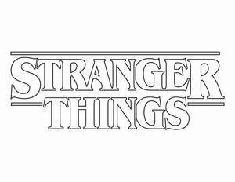

Trade Mark Journal No.2026/012 20 March 2026
UK00004350347 6 March 2026 (9,16,18,21,30)

- Class 9
- Accessories for mobile phones, computers, laptops, tablets, cameras, portable sound and video players, smartwatches, personal digital assistants, and electronic book readers, namely, protective sleeves, covers, cases, faceplates, skins, straps, and protective display screen covers; earphones; headphones; keyboards for tablets; mouse pads; binoculars; calculators; cameras; decorative magnets; graduated rulers; magnifying glasses; microphones; radios; sports helmets; walkie-talkies; downloadable audio and video recordings featuring music, film and television soundtracks, music performances, and music videos; downloadable motion picture films, television shows, and other multimedia entertainment content; downloadable podcasts; audio and visual recordings; audio recordings featuring music, stories, dramatic performances, non-dramatic performances, learning activities for children, and games; audiobooks; CDs and DVDs; musical recordings; downloadable ringtones and sound recordings featuring music, all for wireless communication devices; downloadable electronic publications in the field of entertainment; downloadable game software; downloadable interactive entertainment software; mobile, tablet and computer application software featuring downloadable graphics, namely, digital images, digital icons, digital wallpapers and desktop images; downloadable mobile applications; downloadable computer software for accessing online virtual environments in which users can interact for recreational, leisure or entertainment purposes; virtual reality, mixed reality and augmented reality game software and hardware; downloadable virtual goods, namely, digital tokens, digital stickers, digital trading cards, digital artwork, digital images, and digital currency for use in online virtual environments. .
- Class 16
- Appointment books; blank journal books; bookends; daily planners; diaries; envelopes; folders; loose leaf binders; notebooks; notepads; office supplies; packaging boxes of paper; paper clips; paper teaching materials; paper; paperweights; rubber stamps; stationery; art prints; arts and crafts clay kits; arts and crafts paint kits; arts and crafts paper kits; art pictures; chalk; ballpoint pens; colored pencils; composition books; craft paper; crayons; drawing rulers; dry erase writing boards and dry erase writing surfaces; easels; felt pens; glitter for stationery purposes; highlighting markers; markers; modeling clay; paint boxes; painting sets for children; pen and pencil cases and boxes; pencil erasers; pencil sharpeners; pencils; pens; stencils; decorative paper centerpieces; gift bags; gift boxes; gift cards; gift wrapping paper; greeting cards; handkerchiefs and table linen of paper; paper cake decorations; paper lunch bags; paper napkins; paper party decorations; party goodie bags of paper or plastic; printed invitations; advent calendars; bumper stickers; calendars; coasters of paper; collectible trading cards; decals and stickers for use as home décor; decals; holders for non-magnetically encoded gift cards; money clips; paper mache figurines; passport holders; photograph albums; plastic shopping bags; printed patterns for making clothes; scrapbook albums; sticker books; stickers; books; activity books; baby books; bookmarks; books and magazines featuring characters from animated motion pictures; children’s books; coffee table and art books; coloring books; comic books; story books; printed cookbooks; flashcards; graphic novels; magazines; novels; pamphlets; newspapers; brochures; postcards; posters; printed matter; printed publications.
- Class 18
- All-purpose carrying bags; all-purpose sport bags; athletic bags; baby backpacks; backpacks; beach bags; book bags; briefcases; diaper bags; duffel bags; fanny packs; handbags; knapsacks; luggage; messenger bags; overnight bags; pocketbooks; purses; satchels; shopping bags made of leather, mesh or textile; tote bags; traveling bags; waist packs; animal collars; animal leashes; baby carriers worn on the body; business card cases; coin purses; key cases; leather cases; leather pouches; luggage tags; pet clothing; toiletry cases sold empty; umbrellas; wallets.
- Class 21
- Beverageware; bowls; candle holders not of precious metal; coasters not of paper or textile; coffee cups; cookie jars; cups; dishes; drinking straws; drinking vessels; figurines or busts made of china, ceramic, crystal, earthenware, glass, or porcelain; glassware for household purposes; hair brushes; hair combs; kitchen utensils; lunch boxes; lunch kits consisting of lunch boxes and insulated containers; mason jars; mugs; non-electric portable coolers; paper plates; piggy banks; plastic dishes; plates; pot holders; removable insulating sleeves for drink cans and bottles; salt and pepper shakers; servingware for serving food and drinks; soap dishes; sports bottles sold empty; water bottles sold empty; tea sets; tea cozies; tea cups; thermal insulated containers for food or beverage; toothbrush holders; toothbrushes; trays; tumblers; vacuum bottles; waste baskets; wine openers.
- Class 30
- Bakery goods; biscuits; bread; yeast; breakfast cereals; brownie mixes; cake mixes; candy; confectionery; lollipops; cereal-based snack foods; chocolate; chocolate-based beverages; coffee; coffee-based beverages; chewing gum; cocoa; cocoa-based beverages; cookies; cookie mixes; corn chips; tortilla chips; puffed corn snacks; bagel chips; pita chips; shrimp chips; pretzel chips; wonton chips; grain-based chips; crackers; edible ices; frozen confections; frozen yogurt; frozen yogurt-based snack foods; chocolate mousses; dessert mousses; honey; ice cream; ice cream cones; muffins; oatmeal; pancakes; pancake mixes; pancake syrup; pastries; doughnuts; pasta; noodles; instant noodles; ramen noodles; pies; pizza; pizza bases; popcorn; pretzels; puddings; rice; rice cakes; sandwiches; scones; breadsticks; salt; sauces; pasta sauces; ketchup; soy sauce; chili sauces; mustard; barbecue sauce; spices; seasonings; sugar; sugar substitutes; tea; waffles; granola; granola-based snack bars; cereal bars; marshmallows; flavored syrups for food and beverages; edible cake decorations; dough; tortillas; tapioca; sago; custards; sorbets; flavored ices; ready-to-eat meals consisting primarily of pasta or rice; flavorings, other than essential oils, for cakes and beverages; polished cereals; starch for food; flour and preparations made from cereals; natural sweeteners; almond paste; baking powder; malt extract for food.
Netflix Studios, LLC
Representative: Morgan, Lewis & Bockius UK LLP